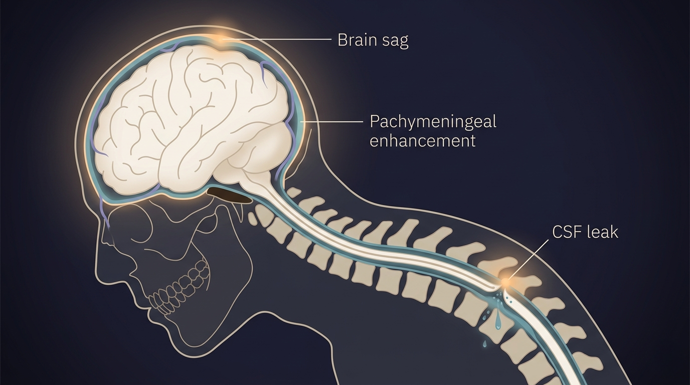

Most migraine guides teach you what migraine is. This one is about what it sometimes isn't.
Each year, three to five people per 100,000 develop spontaneous intracranial hypotension, or SIH[1, 2]. The numbers look small. The misdiagnosis rate does not. In the most cited study on the subject, 94% of SIH patients were initially given the wrong diagnosis, and the average delay to the correct one was 13 months — with some cases stretching to 13 years[3]. The most common wrong label was migraine.
SIH is not migraine. It is a plumbing problem. Somewhere along the spine, a tiny hole in the dura — the tough membrane that holds your cerebrospinal fluid (CSF) in — has opened. Fluid leaks out. The brain, which normally floats in about 150 ml of CSF, loses some of its cushion and starts to sag, tugging on the pain-sensitive structures it's anchored to[4]. The result is a headache that looks like migraine, sounds like migraine, and responds to migraine drugs the way a flat tire responds to a fuel additive.
The signature you can feel for yourself
The classic fingerprint of SIH fits in one sentence: the headache is worse upright and dramatically better lying down[5, 6]. In the acute phase, the change can happen within fifteen minutes either way. Patients often remember the exact moment it began — mid-cough, mid-stretch, mid-workout[4].
This is physics, not pharmacology. When you stand, gravity pulls fluid down the spine and away from the skull. When you lie flat, pressure equalizes and the brain refloats. Migraine pain may worsen with activity, but it does not reliably vanish within fifteen minutes of going horizontal[7].
The orthostatic window narrows over time
In a prospective study, 93% of patients presenting within ten weeks of onset had textbook orthostatic headaches. Past ten weeks, fewer than 63% still did[8]. A 2024 review of 90 SIH patients found that 24% had no positional component at all, and 1% had no headache whatsoever[9].
So the longer SIH is missed, the less it looks like itself. The leak keeps going. The headache becomes constant. The patient gets relabeled as "chronic migraine."
⚠️ When to seek urgent medical care
Untreated SIH can occasionally progress to serious complications including subdural hematoma, cerebral venous thrombosis, and rarely, brain herniation. Seek emergency care immediately if you experience any of the following:
- Sudden, severe "thunderclap" headache unlike anything before
- Progressive drowsiness, confusion, slurred speech, or difficulty staying awake
- New weakness, numbness, or loss of coordination on one side of the body
- Sudden visual changes, double vision, or loss of vision
- Seizures
- Fever, neck stiffness, and headache together (rule out meningitis)
These symptoms warrant immediate evaluation, not a wait-and-see approach.
Why it mimics migraine so well
SIH borrows almost the entire migraine symptom list. Nausea, vomiting, photophobia, phonophobia, neck stiffness, dizziness — each appears in 28–54% of SIH patients[10]. A meta-analysis of more than 2,000 cases found headache in 97%, usually occipital, frontal, or diffuse, often with the same autonomic features as a severe migraine attack[10].
A 2024 prospective study from a tertiary headache clinic measured the overlap directly: 75% of patients with confirmed SIH also reported at least one classic migraine symptom, phonophobia being the most common at 62.5%[11]. The presence of migrainous features did not predict whether a patient actually had a leak. In other words, a person can look fully migrainous and still have a hole in their dura.
Quieter clues point away from migraine. Three matter most:
Cochleovestibular symptoms
Tinnitus, muffled hearing, a feeling of fullness in the ears, or true vertigo — reported in 27–28% of SIH patients[10]. Low CSF pressure alters inner-ear fluid dynamics. Episodic migraine rarely produces persistent tinnitus.
Neck and interscapular pain
Forty-three percent of SIH patients report neck pain or stiffness as a major feature — often more bothersome than the headache itself[10]. Pain between the shoulder blades is a particular red flag: it points to a thoracic-level leak.
The "second half of the day" pattern
Some chronic SIH patients no longer feel an immediate positional change, but report headaches that reliably build through the afternoon and evening — worse the longer they've been upright[12]. It looks like a tension headache. It isn't.
What goes wrong inside the skull

The mechanism is elegant and unforgiving. The Monro-Kellie hypothesis says the skull is a closed box containing brain, blood, and CSF, and that the total volume must stay constant[4]. When CSF leaks out, something has to expand to take its place. What expands is blood: the dural veins engorge, the pituitary swells, and small subdural fluid collections may form. On contrast-enhanced brain MRI, this appears as diffuse, smooth thickening and brightening of the dura — pachymeningeal enhancement[13].
SEEPS — the radiologist's mnemonic
Subdural collections · Enhancement of the pachymeninges · Engorgement of venous structures · Pituitary hyperemia · Sagging of the brain[14]. Five findings that, together, are the visual signature of low CSF volume on MRI.
In a series of 99 SIH cases, pachymeningeal enhancement was visible on MRI in 83%, and brain sag in 61%[15]. And yet brain MRI is normal in roughly 19% of SIH cases overall — and the longer the leak has been running, the cleaner the imaging tends to look[10, 16]. A normal MRI is not the all-clear it sounds like.
The same holds for lumbar puncture. The textbook says SIH should show a CSF pressure under 60 mm of water. Reality: only about 34% of SIH patients have a pressure that low when measured[17]. The other two-thirds have normal pressure with a real, treatable leak. Diagnostic criteria that demand low pressure or positive imaging will miss the majority of patients[11].
What actually treats it
Migraine medication does almost nothing for SIH. That alone is reason enough to revisit any "treatment-resistant migraine" diagnosis. The treatment is to seal the hole.
Conservative care — strict bed rest, hydration, and caffeine — helps about 28% of cases, and the relief is often temporary[18]. First-line definitive treatment is the epidural blood patch (EBP): 15–20 ml of the patient's own blood is injected into the epidural space, where it clots and seals the leak. A meta-analysis of 500 patients found that 60% achieved complete remission within 48 hours of the first patch[19]. Patients who don't respond often improve after a second or third patch, or after a targeted patch directed at an imaging-confirmed leak site[20].
For the small subset who fail repeated patches, surgical closure of the dural defect or ligation of a CSF-venous fistula — a leak type only identified in 2014 — produces durable resolution[21, 22].
The question to ask
If you've been treated for migraine more than six months and aren't improving
One question changes the conversation: "Is my headache reliably worse when I'm upright and better when I'm flat?"
If yes, ask your doctor about SIH. Ask whether a brain MRI with contrast is warranted to look for pachymeningeal enhancement and brain sag. Ask whether, in the absence of clear imaging findings but with a convincing orthostatic history, an empiric epidural blood patch is reasonable — a 2024 prospective study found that 74% of patients who benefited from EBPs did not meet formal ICHD-3 criteria for SIH[11].
SIH is rare. The cost of missing it is not.
Key Takeaways
- 94% of SIH patients are initially misdiagnosed, most often as migraine, and the average delay to the correct diagnosis is 13 months[3].
- The hallmark is positional: headache worse standing or sitting, better lying flat. In the first ten weeks, this pattern is present in 93% of cases[8].
- Migraine medication does not work because SIH is structural, not neurochemical. The cause is a small dural leak losing cerebrospinal fluid.
- Red flags beyond positionality: persistent tinnitus or muffled hearing, neck and interscapular pain, and "second half of the day" headaches that worsen the longer you're upright[10, 12].
- A normal MRI or normal lumbar puncture does not rule out SIH — imaging is normal in ~19% of cases, and CSF pressure is normal in ~66%[10, 17].
- Treatment is the epidural blood patch, which produces complete remission in roughly 60% of cases after the first patch[19].
- Ask your doctor the orthostatic question if you have been labeled "chronic" or "treatment-resistant" migraine for more than six months.